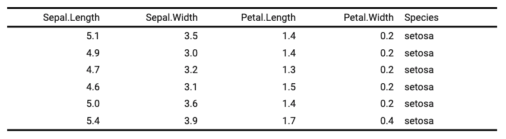

Defines the widths of one or more columns in the
table. This function will have no effect if you have
used set_table_properties(layout = "autofit").
set_table_properties() can provide an alternative to fixed-width layouts
that is supported with HTML and Word output that can be set
with set_table_properties(layout = "autofit").
width(x, j = NULL, width, unit = "in")a flextable() object
columns selection
width in inches
unit for width, one of "in", "cm", "mm".
Heights are not used when flextable is been rendered into HTML.

Other flextable dimensions:
autofit(),
dim.flextable(),
dim_pretty(),
fit_to_width(),
flextable_dim(),
height(),
hrule(),
ncol_keys(),
nrow_part(),
set_table_properties()
ft <- flextable(head(iris))
ft <- width(ft, width = 1.5)
ft
#> a flextable object.
#> col_keys: `Sepal.Length`, `Sepal.Width`, `Petal.Length`, `Petal.Width`, `Species`
#> header has 1 row(s)
#> body has 6 row(s)
#> original dataset sample:
#> Sepal.Length Sepal.Width Petal.Length Petal.Width Species
#> 1 5.1 3.5 1.4 0.2 setosa
#> 2 4.9 3.0 1.4 0.2 setosa
#> 3 4.7 3.2 1.3 0.2 setosa
#> 4 4.6 3.1 1.5 0.2 setosa
#> 5 5.0 3.6 1.4 0.2 setosa